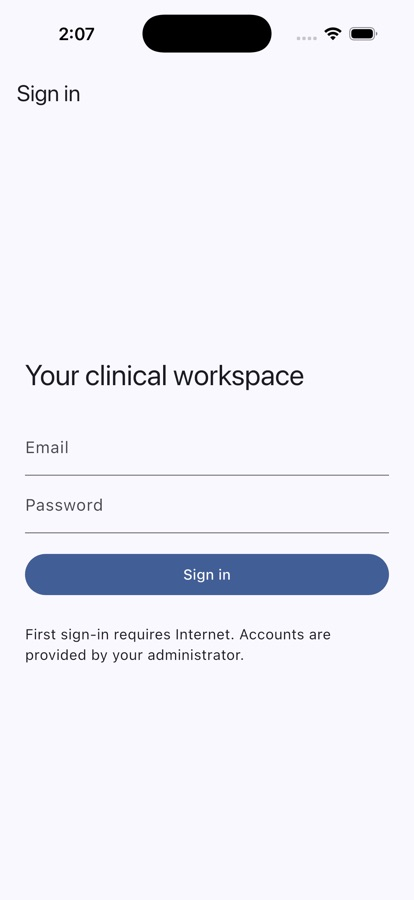
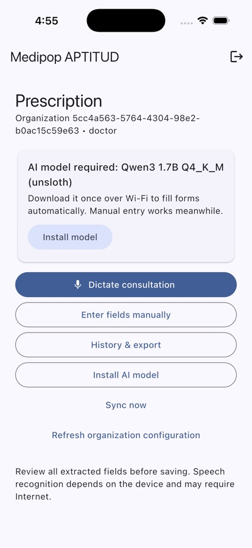
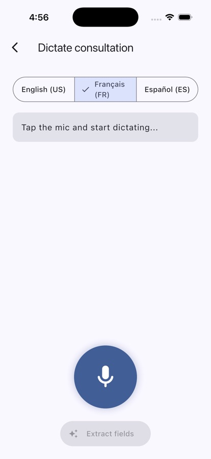
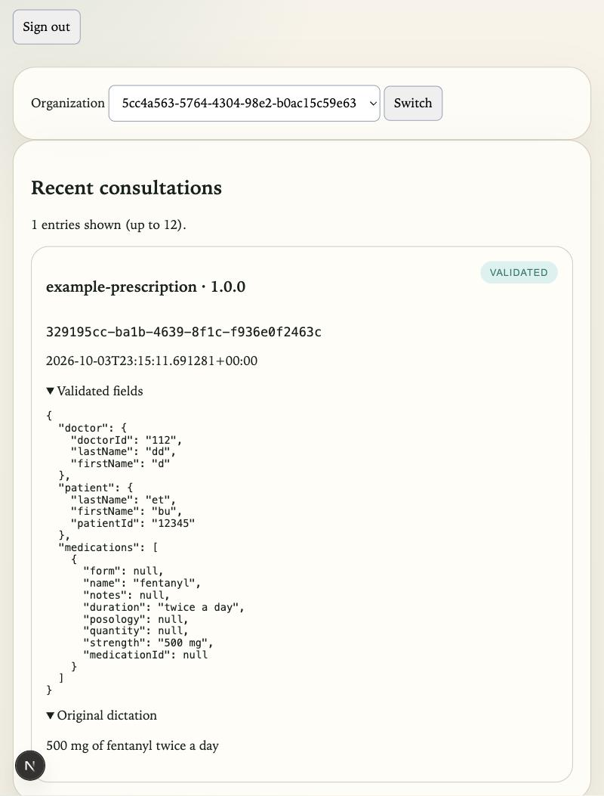
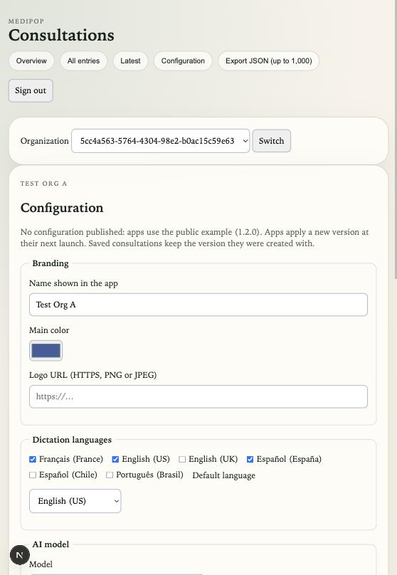
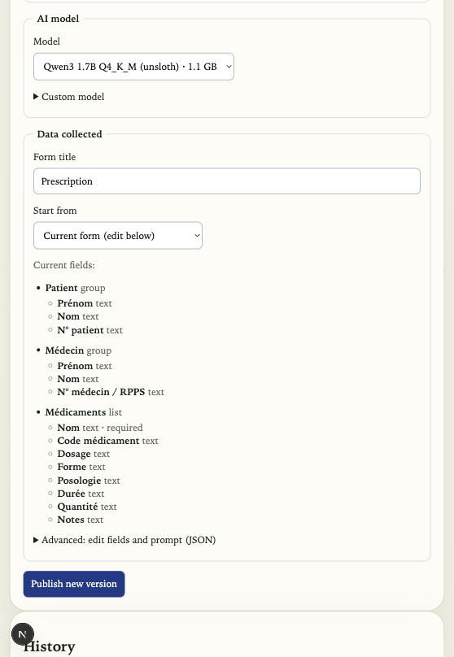

Medipop · briefing for the APTITUD team · October 2026
Medipop for APTITUD
A tablet app that listens to a clinician, fills a structured form with an AI model running on the tablet itself, and sends the record to APTITUD only after the clinician has checked and validated it.
Pilot 1 · fictional data onlyiPad & iPhone · Android plannedEnglish · Français · Español
How it works
From dictation to a validated record
DictateThe clinician speaks. The tablet turns speech into text in the chosen language.
ExtractAn AI model on the tablet fills the form fields from the text. No server involved.
ReviewThe clinician corrects any field. Nothing is saved without this check.
SaveThe record is stored on the tablet, so work continues without Internet.
SyncWhen online, records go to APTITUD's server. Each record is sent once, even after a retry.
UseAPTITUD admins see records in the dashboard and export them.
Happens on the tabletHappens on APTITUD's server
The original dictation is kept with each record, so anyone reviewing it later can see exactly what was said.
Architecture
Three building blocks
Medipop is designed so that other organizations, in other countries, can use the same app with their own forms and their own servers. What is specific to APTITUD stays private to APTITUD.
The fields to collect are not built into the app. APTITUD's addiction-medicine form is one configuration; a psychiatry or cardiology service would publish its own form, languages and AI model in the same way, without any change to the app.
Block
What it contains
Who sees it
medipop-core
The app itself: dictation, on-tablet AI, forms, validation, local storage, export.
Open source (MIT licence)
medipop-connectors
Sign-in, organizations and roles, server database rules, the admin dashboard.
Open source (MIT licence)
medipop-aptitud
APTITUD's configuration: form fields, vocabularies, spreadsheet mapping, reports, deployment notes.
Private to APTITUD
Screens
What clinicians and admins see

Sign-in. Accounts are created by APTITUD; a new account sees nothing until an admin adds it to the organization.

Home. The organization's form, a prompt to install the AI model the first time, dictation, manual entry, history and sync.

Dictation. Choose the language, tap the microphone, speak, then “Extract fields”.
‹ Review Prescription
Patient
First nameJane
Last nameDoe
Patient IDTEST-0042
Doctor
Last nameMartin
Doctor ID / licenseDR-TEST-17
Medication 1
Name *Amoxicillin
Strength500 mg
Formtablet
Posology1 tablet three times a day
Duration7 days
Original dictation“Jane Doe, patient TEST-0042. Amoxicillin 500 milligrams, one tablet three times a day for seven days. Doctor Martin.”
Validate & save
Review, after extraction (illustration, fictional data). The clinician checks and corrects each field; the original dictation stays visible. Nothing is saved before “Validate & save”.

Dashboard. Validated records with their fields and the original dictation (test record).
Configuration
APTITUD controls the app from the dashboard
An APTITUD admin sets everything below in the dashboard and publishes it. Tablets pick up the new version the next time the app is opened, never in the middle of a form. Records already saved keep the form version they were created with.

Name, colour and logo shown in the app; dictation languages and the default one.

The AI model tablets download, and the fields of the form. Every publication is versioned.
Installation
Setting up a tablet
Install the app. During pilot 1 the app is installed directly from a Mac on each test iPad. For wider testing it will be distributed through Apple TestFlight: a QR code opens the install page.
Sign in with the account APTITUD created. The first sign-in needs Internet.
Install the AI model when the app asks. It is a one-time 1.1 GB download, over Wi-Fi, with the app kept open. The file is checked against its published fingerprint before use.
Allow the microphone and speech recognition the first time you dictate.
Work as usual. Without network, records stay on the tablet and are sent automatically when the connection returns.
Status
What is built, what comes next
Built and tested
Dictation, on-tablet extraction, review and validation, tested on an iPad
Offline storage and automatic sync without duplicates
Sign-in, organizations, clinician and admin roles
Server rules: an organization can never see another's records (automated tests)
English, French and Spanish dictation; translated field labels
Organization branding: name, colour, logo
Next
The APTITUD form itself, from your documents
Two-way sync with the APTITUD spreadsheet
Regular activity reports
One public app: sign in with your work email and the app finds APTITUD automatically
Automatic model download in the background
Better extraction quality on real dictations
App interface in French and Spanish
Health data
Two pilots, two levels of protection
Pilot 1 uses fictional data only, on a standard cloud database. No real patient name or detail may be entered, including in test dictations.
Pilot 2 uses real data. Before it starts: hosting certified for health data (HDS), speech recognition forced to run on the tablet, encrypted storage on the tablet, a data protection impact assessment validated by APTITUD's DPO, and a tested backup and restore procedure.
Why speech recognition matters: depending on the device and language, Apple's recognizer may send audio to Apple's servers. For real data, Medipop will refuse to dictate unless recognition runs entirely on the tablet; manual entry remains available.
Next steps
What we need from APTITUD
The current form: fields, required fields, value lists and validation rules.
The spreadsheet: column headers and one invented example row.
An example of the activity report you produce today.
An Apple Developer account in APTITUD's name for distribution (a fee waiver exists for non-profit organizations).
A contact at your DPO to prepare pilot 2.
Medipop · présentation pour l'équipe APTITUD · octobre 2026
Medipop pour APTITUD
Une application pour tablette qui écoute le soignant, remplit un formulaire structuré grâce à une IA qui tourne sur la tablette elle-même, et n'envoie le dossier à APTITUD qu'après sa vérification et sa validation par le soignant.
Pilote 1 · données fictives uniquementiPad & iPhone · Android prévuEnglish · Français · Español
Fonctionnement
De la dictée au dossier validé
DicterLe soignant parle. La tablette transcrit la voix en texte, dans la langue choisie.
ExtraireUne IA sur la tablette remplit les champs du formulaire à partir du texte. Aucun serveur n'intervient.
RelireLe soignant corrige les champs si besoin. Rien n'est enregistré sans cette vérification.
EnregistrerLe dossier est stocké sur la tablette : on peut continuer à travailler sans Internet.
SynchroniserDès que le réseau revient, les dossiers partent vers le serveur d'APTITUD. Chaque dossier n'est envoyé qu'une fois, même en cas de nouvel essai.
ExploiterLes administrateurs d'APTITUD consultent les dossiers dans le tableau de bord et les exportent.
Se passe sur la tabletteSe passe sur le serveur d'APTITUD
La dictée d'origine est conservée avec chaque dossier : toute personne qui le relit plus tard sait exactement ce qui a été dit.
Architecture
Trois briques
Medipop est conçu pour que d'autres organismes, dans d'autres pays, utilisent la même application avec leurs propres formulaires et leurs propres serveurs. Ce qui est propre à APTITUD reste privé.
Les données à recueillir ne sont pas figées dans l'application. Le formulaire d'addictologie d'APTITUD est une configuration parmi d'autres : un service de psychiatrie ou de cardiologie publierait de la même façon son propre formulaire, ses langues et son modèle IA, sans modifier l'application.
Brique
Contenu
Visibilité
medipop-core
L'application : dictée, IA sur la tablette, formulaires, validation, stockage local, export.
Open source (licence MIT)
medipop-connectors
Connexion, organismes et rôles, règles de la base de données, tableau de bord d'administration.
Open source (licence MIT)
medipop-aptitud
La configuration d'APTITUD : champs du formulaire, vocabulaires, correspondance avec le tableur, rapports, notes de déploiement.
Privé, réservé à APTITUD
Écrans
Ce que voient les soignants et les administrateurs
Connexion. Les comptes sont créés par APTITUD ; un nouveau compte ne voit rien tant qu'un administrateur ne l'a pas rattaché à l'organisme.Accueil. Le formulaire de l'organisme, l'invitation à installer l'IA la première fois, la dictée, la saisie manuelle, l'historique et la synchronisation.Dictée. Choisir la langue, toucher le micro, parler, puis « Extract fields ».
‹ Review Prescription
Patient
First nameJane
Last nameDoe
Patient IDTEST-0042
Doctor
Last nameMartin
Doctor ID / licenseDR-TEST-17
Medication 1
Name *Amoxicillin
Strength500 mg
Formtablet
Posology1 tablet three times a day
Duration7 days
Original dictation“Jane Doe, patient TEST-0042. Amoxicillin 500 milligrams, one tablet three times a day for seven days. Doctor Martin.”
Validate & save
Relecture après extraction (illustration, données fictives). Le soignant vérifie et corrige chaque champ ; la dictée d'origine reste visible. Rien n'est enregistré avant « Validate & save ».
Tableau de bord. Les dossiers validés avec leurs champs et la dictée d'origine (dossier de test).
Configuration
APTITUD pilote l'application depuis le tableau de bord
Un administrateur d'APTITUD règle tout ce qui suit dans le tableau de bord, puis publie. Les tablettes appliquent la nouvelle version à la prochaine ouverture de l'application, jamais au milieu d'une saisie. Les dossiers déjà enregistrés gardent la version du formulaire avec laquelle ils ont été créés.
Nom, couleur et logo affichés dans l'application ; langues de dictée et langue par défaut.Le modèle IA que téléchargent les tablettes et les champs du formulaire. Chaque publication est versionnée.
Installation
Préparer une tablette
Installer l'application. Pendant le pilote 1, elle est installée depuis un Mac sur chaque iPad de test. Pour un test plus large, elle sera distribuée par Apple TestFlight : un QR code ouvre la page d'installation.
Se connecter avec le compte créé par APTITUD. La première connexion nécessite Internet.
Installer le modèle IA quand l'application le propose : un téléchargement unique de 1,1 Go, en Wi-Fi, application ouverte. Le fichier est vérifié par son empreinte publiée avant utilisation.
Autoriser le micro et la reconnaissance vocale lors de la première dictée.
Travailler normalement. Sans réseau, les dossiers restent sur la tablette et partent automatiquement au retour de la connexion.
Avancement
Ce qui est fait, ce qui vient
Développé et testé
Dictée, extraction sur la tablette, relecture et validation, testées sur iPad
Stockage hors ligne et synchronisation automatique sans doublon
Connexion, organismes, rôles soignant et administrateur
Règles serveur : un organisme ne voit jamais les dossiers d'un autre (tests automatisés)
Tableau de bord : dossiers, export JSON, publication de la configuration
Dictée en anglais, français et espagnol ; libellés des champs traduits
Identité visuelle de l'organisme : nom, couleur, logo
À venir
Le formulaire APTITUD lui-même, à partir de vos documents
Synchronisation dans les deux sens avec le tableur APTITUD
Rapports d'activité réguliers
Une application publique unique : on se connecte avec son e-mail professionnel et l'application trouve APTITUD toute seule
Téléchargement automatique du modèle en arrière-plan
Meilleure qualité d'extraction sur de vraies dictées
Interface de l'application en français et en espagnol
Données de santé
Deux pilotes, deux niveaux de protection
Le pilote 1 utilise uniquement des données fictives, sur une base de données cloud standard. Aucun nom ni détail réel de patient ne doit être saisi, y compris dans les dictées de test.
Le pilote 2 utilise des données réelles. Avant de le lancer : hébergement certifié pour les données de santé (HDS), reconnaissance vocale forcée sur la tablette, stockage chiffré sur la tablette, analyse d'impact (AIPD) validée par le DPO d'APTITUD, et procédure de sauvegarde et de restauration testée.
Pourquoi la reconnaissance vocale compte : selon l'appareil et la langue, la reconnaissance d'Apple peut envoyer l'audio aux serveurs d'Apple. Pour des données réelles, Medipop refusera de dicter si la reconnaissance ne se fait pas entièrement sur la tablette ; la saisie manuelle reste possible.
Prochaines étapes
Ce dont nous avons besoin d'APTITUD
Le formulaire actuel : champs, champs obligatoires, listes de valeurs et règles de validation.
Le tableur : les en-têtes de colonnes et une ligne d'exemple inventée.
Un exemple du rapport d'activité que vous produisez aujourd'hui.
Un compte Apple Developer au nom d'APTITUD pour la distribution (une exonération des frais existe pour les associations).
Un contact chez votre DPO pour préparer le pilote 2.